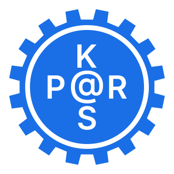
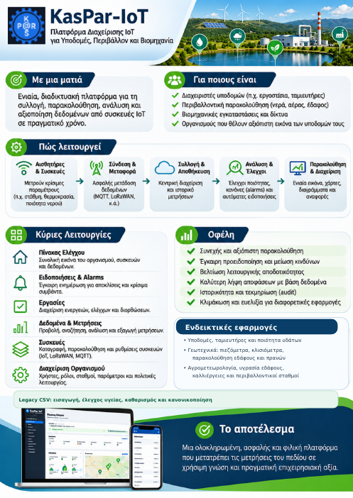

Από τον αισθητήρα
στην απόφαση.
From sensor
to decision.
Το KasPar-IoT είναι πλατφόρμα IoT για πολλούς οργανισμούς. Συγκεντρώνει σε ένα σημείο ζωντανά και ιστορικά δεδομένα από περιβαλλοντικούς, υδρολογικούς, μετεωρολογικούς, γεωτεχνικούς και βιομηχανικούς σταθμούς. Τα ελέγχει, τα οργανώνει και τα κάνει χρήσιμα.
KasPar-IoT is a multi-tenant IoT platform. It brings live and historical data from environmental, hydrological, meteorological, geotechnical and industrial stations into one place, then validates and organises it so people can act on it.
- Πολλοί οργανισμοί, απομόνωση στη βάσηMulti-tenant, isolated at the database
- HTTP · MQTT/TLS · LoRaWAN · (S)FTP · ThingsBoard
- Cloud ή on-premisesCloud or on-premises

Μία ροή, από το πεδίο έως τον πίνακα ελέγχουOne flow, from the field to the dashboard
Κάθε μέτρηση, όπως κι αν φτάσει, περνά από την ίδια διαδρομή: ταυτοποίηση, ουρά, έλεγχο, αποθήκευση και αξιοποίηση.
Every measurement, however it arrives, follows the same path: identification, queueing, validation, storage and use.
ΠηγέςSources
- Συσκευές Wi-Fi / Ethernet (π.χ. ESP32)Wi-Fi / Ethernet devices (e.g. ESP32)
- Συσκευές κινητού δικτύου (4G, LTE-M, NB-IoT, π.χ. με SIM 1NCE)Cellular devices (4G, LTE-M, NB-IoT, e.g. with a 1NCE SIM)
- Κόμβοι LoRaWANLoRaWAN nodes
- Dataloggers
- Ιστορικά αρχεία CSVHistorical CSV files
ΛήψηIngestion
- HTTP device API
- MQTT με TLS, ACL ανά συσκευήMQTT over TLS, per-device ACL
- LoRaWAN μέσω ChirpStackLoRaWAN via ChirpStack
- Αρχεία μέσω (S)FTP, push και pullFiles via (S)FTP, push and pull
- Εξωτερικοί MQTT brokers και ThingsBoardExternal MQTT brokers and ThingsBoard
ΠυρήναςCore
- Ουρά μηνυμάτων με επαναλήψειςMessage queue with retries
- Κανόνες ποιότητας ανά οργανισμόPer-tenant quality rules
- Χρονοσειρές σε PostgreSQLTime series in PostgreSQL
- Καταγραφή κάθε ενέργειαςAudit trail for every action
ΑξιοποίησηInsight
- Χάρτης σταθμώνStation map
- Ανάλυση χρονοσειρώνTime-series analysis
- Ειδοποιήσεις με emailEmail alarms
- Εξαγωγές και αναφορέςExports and reports
Όλα όσα χρειάζεται ένα δίκτυο σταθμώνEverything a station network needs
Πολλοί οργανισμοίMulti-tenancy
Κάθε οργανισμός βλέπει μόνο τα δικά του δεδομένα. Η απομόνωση επιβάλλεται στη βάση με Row-Level Security, όχι μόνο στην εφαρμογή.
Each organisation sees only its own data. Isolation is enforced in the database with Row-Level Security, not just in the application.
ΑσφάλειαSecurity
Ρόλοι ανά επίπεδο, 2FA υποχρεωτικό για διαχειριστές, προστασία από brute-force, TLS με δική σας CA και πλήρες audit trail.
Scoped roles, mandatory 2FA for administrators, brute-force protection, TLS with your own CA and a full audit trail.
Ζωντανά δεδομέναLive data
Tokens συσκευών που εμφανίζονται μία φορά, ACL ανά συσκευή στον broker και άμεση ανάκληση. Κανάλια που αντιστοιχίζουν κλειδιά σε χρονοσειρές με μετατροπή μονάδων.
Device tokens shown only once, per-device broker ACLs and instant revocation. Channels map payload keys to time series, with unit conversion.
Ιστορικά δεδομέναLegacy data
Εισαγωγή CSV με πρότυπα ανά οργανισμό, έλεγχο υγείας, κανονικοποίηση πεδίων και δυνατότητα αναίρεσης μιας εισαγωγής.
CSV import with per-tenant templates, health checks, field normalisation, and the option to roll back an import.
Ποιότητα δεδομένωνData quality
Έλεγχοι πληρότητας, ορίων και ασυνέχειας. Οι διορθώσεις καταγράφονται με οριστική απόφαση, ώστε να ξέρετε ποιος άλλαξε τι.
Completeness, range and discontinuity checks. Corrections are recorded with a final decision, so you always know who changed what.
Χάρτης σταθμώνStation map
Σταθμοί με χρώμα ανά κατάσταση. Με ένα κλικ βλέπετε τις τελευταίες τιμές και περνάτε στην ανάλυση.
Stations colour-coded by state. One click shows the latest values and leads straight to analysis.
Ανάλυση χρονοσειρώνTime-series analysis
Όλες οι χρονοσειρές ενός σταθμού σε μία οθόνη, με χρονικό παράθυρο της επιλογής σας και συγκεντρωτικές λήψεις.
All of a station's time series on one screen, with a time window of your choice and aggregated downloads.
ΕιδοποιήσειςAlarms
Συναγερμοί από τους ίδιους κανόνες ποιότητας, με email μόνο σε μέλη του οργανισμού.
Alarms built from the same quality rules, emailed only to members of the organisation.
Συνδέστε ό,τι έχετε ήδη στο πεδίοConnect what you already have in the field
Η πλατφόρμα δεν σας δεσμεύει σε συγκεκριμένο υλικό. Δέχεται δεδομένα από ανοιχτά πρωτόκολλα και τυποποιημένα αρχεία.
The platform does not lock you into specific hardware. It accepts data over open protocols and standard file formats.
| ΚανάλιChannel | Για τιUsed for | ΚατάστασηStatus |
|---|---|---|
| HTTP device API | Απλές συσκευές και scripts, με Bearer token και idempotency.Simple devices and scripts, with Bearer token and idempotency. | ΔιαθέσιμοAvailable |
| MQTT / TLS | Συνεχής τηλεμετρία. Ενσωματωμένος broker με έναν client και ένα ACL ανά συσκευή.Continuous telemetry. Built-in broker with one client and one ACL per device. | ΔιαθέσιμοAvailable |
| LoRaWAN | Αισθητήρες χαμηλής κατανάλωσης σε μεγάλες αποστάσεις, μέσω ChirpStack v4, τοπικά ή μέσω internet.Low-power, long-range sensors via ChirpStack v4, local or over the internet. | ΔιαθέσιμοAvailable |
| (S)FTP / αρχείαfiles | Dataloggers που ανεβάζουν ή από τα οποία κατεβάζουμε αρχεία, με ρυθμιζόμενη μορφή ανά τύπο.Dataloggers that push files or are polled for them, with a configurable format per type. | ΔιαθέσιμοAvailable |
| CSV | Εισαγωγή ιστορικών σειρών μετρήσεων με πρότυπα και έλεγχο ποιότητας.Import of historical measurement series with templates and quality checks. | ΔιαθέσιμοAvailable |
| Εξωτερικός MQTT brokerExternal MQTT broker | Λήψη τηλεμετρίας από υπάρχοντα broker (EMQX, HiveMQ, Mosquitto, AWS IoT). Μόνο subscribe, με έγκριση των νέων συσκευών.Receive telemetry from an existing broker (EMQX, HiveMQ, Mosquitto, AWS IoT). Subscribe-only, with approval of new devices. | ΔιαθέσιμοAvailable |
| ThingsBoard | Και προς τις δύο κατευθύνσεις, με ThingsBoard CE, PE ή Cloud: λήψη μέσω rule chain και προώθηση μετρήσεων ως συσκευή gateway. Δέχεται και μηνύματα dataloggers με τη δική τους ώρα, χωρίς απώλειες πριν την έγκριση.Both directions, with ThingsBoard CE, PE or Cloud: receive via a rule chain and forward measurements as a gateway device. Datalogger messages keep their own timestamps, and nothing is lost before approval. | ΔιαθέσιμοAvailable |
Σχεδιασμένο για υποδομές και περιβάλλονBuilt for infrastructure and the environment
ΓεωτεχνικάGeotechnical
- Πιεζόμετρα
- Κλισιόμετρα
- Παρακολούθηση εδάφους και πρανών
- Piezometers
- Inclinometers
- Ground and slope monitoring
ΝερόWater
- Ταμιευτήρες και στάθμες
- Ποιότητα υδάτων
- Βροχοπτώσεις και παροχές
- Reservoirs and water levels
- Water quality
- Rainfall and flows
ΑγρομετεωρολογίαAgro-meteorology
- Μετεωρολογικοί σταθμοί
- Υγρασία εδάφους
- Παρακολούθηση καλλιεργειών
- Weather stations
- Soil moisture
- Crop monitoring
ΒιομηχανίαIndustry
- Περιβαλλοντικοί αισθητήρες
- Εξοπλισμός πεδίου
- Ειδοποιήσεις εκτός ορίων
- Environmental sensors
- Field equipment
- Out-of-range alarms
Στο cloud ή στον δικό σας χώροIn the cloud or on your own premises
Τα δεδομένα σας μένουν εκεί που αποφασίζετε. Η πλατφόρμα εγκαθίσταται με Docker σε server του οργανισμού ή σε υποδομή cloud.
Your data stays where you decide. The platform installs with Docker on your own server or on cloud infrastructure.
- Ολόκληρη η πλατφόρμα σε containers: βάση, API, ingestion, broker, frontend
- The whole platform in containers: database, API, ingestion, broker, frontend
- HTTPS και MQTT/TLS με πιστοποιητικά που διαχειρίζεστε από το UI
- HTTPS and MQTT/TLS with certificates managed from the UI
- Έλεγχος έκθεσης στο internet και οδηγίες firewall μέσα στην εφαρμογή
- Internet exposure check and firewall guidance inside the app
- Δίγλωσσο περιβάλλον, ώρα αποθήκευσης σε UTC και ζώνη ώρας ανά πηγή
- Bilingual interface, UTC storage and a timezone per data source
Ανοιχτά εργαλεία για να συνδεθείτε γρήγοραOpen tools to get connected fast
Firmware δοκιμών, decoders και οδηγοί, ελεύθερα διαθέσιμα σε αυτό το repository. Λειτουργούν με το KasPar-IoT αλλά και με ThingsBoard ή οποιονδήποτε MQTT broker.
Test firmware, decoders and guides, freely available in this repository. They work with KasPar-IoT, and also with ThingsBoard or any MQTT broker.
Universal ESP32 MQTT Client
Μετατρέπει ένα ESP32 σε παραμετροποιήσιμο εργαλείο δοκιμών MQTT. Όλες οι ρυθμίσεις γίνονται από ελληνικό μενού στο Serial, χωρίς νέο compile: Wi-Fi, broker, TLS/mTLS, topics, εικονικοί αισθητήρες, προφίλ.
Turns an ESP32 into a configurable MQTT test tool. Everything is set from a serial menu, with no recompiling: Wi-Fi, broker, TLS/mTLS, topics, virtual sensors and presets.
Universal LoRaWAN Client (MKR 1310)
Firmware για Arduino MKR WAN 1310: OTAA στο EU868, έως 8 εικονικοί αισθητήρες, συμπαγές binary ή JSON payload και ρύθμιση από μενού.
Firmware for the Arduino MKR WAN 1310: OTAA on EU868, up to 8 virtual sensors, compact binary or JSON payloads, and menu-driven setup.
ChirpStack v4 Decoder
Codec JavaScript για το Device Profile του ChirpStack. Αναγνωρίζει αυτόματα binary ή JSON και επιστρέφει αντικείμενο με ονόματα αισθητήρων.
JavaScript codec for the ChirpStack Device Profile. It detects binary or JSON automatically and returns an object keyed by sensor name.
Δοκιμάστε το LoRaWAN payloadTry the LoRaWAN payload
Ίδια λογική με το firmware και τον decoder: byte έκδοσης, πλήθος, και για κάθε αισθητήρα ID (1–8) και signed int32 big-endian με την τιμή ×100.
Same logic as the firmware and decoder: a version byte, a count, then per sensor an ID (1–8) and a signed big-endian int32 holding the value ×100.
Τα ονόματα ακολουθούν τον πίνακα του decoder: θέση 1 temperature, θέση 2 humidity, 3–8 sensor3…sensor8.
Names follow the decoder table: slot 1 temperature, slot 2 humidity, 3–8 sensor3…sensor8.
HEX
Base64 (όπως στο ChirpStack)(as shown in ChirpStack)
Δεκτά και JSON payloads που ξεκινούν με «{».
JSON payloads starting with “{” are accepted too.
decodeUplink() → data
Οδηγοί και υλικό παρουσίασηςGuides and presentation material

Infographic A4
Legacy δεδομένα, γεωτεχνικές εφαρμογές και επιλογές εγκατάστασης σε μία σελίδα, για εκτύπωση ή αποστολή.
Legacy data, geotechnical applications and deployment options on one page, ready to print or send (in Greek).
ΟδηγοίGuides
- Βιβλίο χρήσης διαχειριστή οργανισμού (PDF)Tenant administrator manual (PDF, Greek)
- Εγχειρίδιο διαχειριστή πλατφόρμας (PDF)Platform administrator manual (PDF, Greek)
- ESP32: εγκατάσταση, TLS, ThingsBoard, Mosquitto, mTLSESP32: setup, TLS, ThingsBoard, Mosquitto, mTLS (Greek)
- LoRaWAN με MKR 1310 και ChirpStackLoRaWAN with MKR 1310 and ChirpStack (Greek)
- Σύνδεση ThingsBoard → KasPar-IoT (rule chain)ThingsBoard → KasPar-IoT (rule chain, Greek)
- Όλοι οι οδηγοίAll guides
Θέλετε να δείτε το KasPar-IoT σε λειτουργία;Want to see KasPar-IoT in action?
Ανοίξτε ένα θέμα στο GitHub για επίδειξη, ερωτήσεις ή συνεργασία.Open a GitHub discussion for a demo, questions or collaboration.
ΕπικοινωνίαGet in touch →